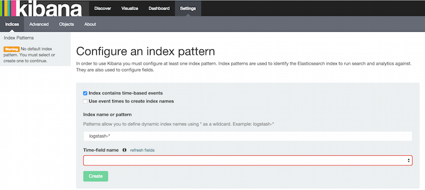

Getting Kibana Up and Runningedit
You can set up Kibana and start exploring your Elasticsearch indices in minutes. All you need is:
- Elasticsearch 1.4.4 or later
- A modern web browser - Supported Browsers.
Information about your Elasticsearch installation:
- URL of the Elasticsearch instance you want to connect to.
- Which Elasticsearch indices you want to search.
If your Elasticsearch installation is protected by Shield see Shield with Kibana 4 for additional setup instructions.
Install and Start Kibanaedit
To get Kibana up and running:
- Download the Kibana 4 binary package for your platform.
-
Extract the
.ziportar.gzarchive file. -
Run Kibana from the install directory:
bin/kibana(Linux/MacOSX) orbin\kibana.bat(Windows).
That’s it! Kibana is now running on port 5601.
Connect Kibana with Elasticsearchedit
Before you can start using Kibana, you need to tell it which Elasticsearch indices you want to explore. The first time you access Kibana, you are prompted to define an index pattern that matches the name of one or more of your indices. That’s it. That’s all you need to configure to start using Kibana. You can add index patterns at any time from the Settings tab.
By default, Kibana connects to the Elasticsearch instance running on localhost. To connect to a different Elasticsearch instance, modify the Elasticsearch URL in the kibana.yml configuration file and restart Kibana. For information about using Kibana with your production nodes, see Using Kibana in a Production Environment.
To configure the Elasticsearch indices you want to access with Kibana:
Point your browser at port 5601 to access the Kibana UI. For example,
localhost:5601orhttp://YOURDOMAIN.com:5601.
-
Specify an index pattern that matches the name of one or more of your Elasticsearch indices. By default, Kibana guesses that you’re you’re working with data being fed into Elasticsearch by Logstash. If that’s the case, you can use the default
logstash-*as your index pattern. The asterisk (*) matches zero or more characters in an index’s name. If your Elasticsearch indices follow some other naming convention, enter an appropriate pattern. The "pattern" can also simply be the name of a single index. - Select the index field that contains the timestamp that you want to use to perform time-based comparisons. Kibana reads the index mapping to list all of the fields that contain a timestamp. If your index doesn’t have time-based data, disable the Index contains time-based events option.
- If new indices are generated periodically and have a timestamp appended to the name, select the Use event times to create index names option and select the Index pattern interval. This improves search performance by enabling Kibana to search only those indices that could contain data in the time range you specify. This is primarily applicable if you are using Logstash to feed data into Elasticsearch.
- Click Create to add the index pattern. This first pattern is automatically configured as the default. When you have more than one index pattern, you can designate which one to use as the default from Settings > Indices.
Voila! Kibana is now connected to your Elasticsearch data. Kibana displays a read-only list of fields configured for the matching index.
Start Exploring your Data!edit
You’re ready to dive in to your data: